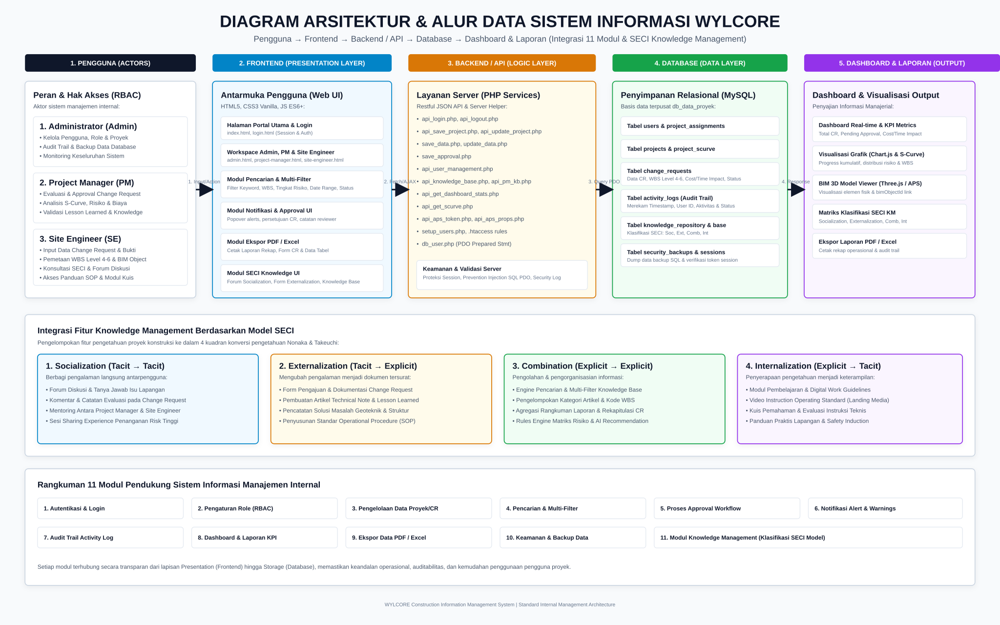

Penjelasan transparan alur kerja data dari penginputan oleh pengguna hingga penyajian laporan manajerial.

Seluruh fitur pendukung operasional yang telah tertanam di dalam arsitektur sistem WYLCORE.
Sistem otentikasi sesi terproteksi untuk memverifikasi identitas pengguna dan keamanan pintu masuk aplikasi.
Otorisasi bertingkat membatasi hak akses antara Administrator, Project Manager, dan Site Engineer.
>>>>>>> parent of 38f7089 (Revert changes back to previous state)Manajemen transaksi data proyek, penanganan Change Request, pemetaan WBS Level 4-6, dan bukti foto.
Toolbar pencarian cepat dan penyaringan data berdasarkan kata kunci, kode WBS, tingkat risiko, dan tanggal.
Alur persetujuan manajerial oleh PM/Admin dengan status APPROVED, REJECTED, atau PENDING disertai catatan.
Pemberitahuan visual real-time untuk status pengajuan baru dan peringatan ambang batas risiko kritis.
Pencatatan riwayat aktivitas pengguna lengkap dengan timestamp, user ID, jenis aksi, dan alamat IP.
Visualisasi analitik terpadu memuat KPI ringkas, grafik risiko, Kurva-S progres, dan model visual BIM 3D.
Fitur pencetakan laporan resmi format PDF dan unduhan spreadsheet Excel untuk rekapitulasi operasional.
Proteksi PDO prepared statement, .htaccess server rules, dan tombol pemicu unduhan file dump backup database.
Pengelolaan pengetahuan proyek konstruksi yang mengklasifikasikan pengalaman teknis ke dalam 4 kuadran SECI: Socialization, Externalization, Combination, dan Internalization.
Klasifikasi fitur konversi pengetahuan Nonaka & Takeuchi untuk pembelajaran organisasi proyek konstruksi.
| Nama Fitur Sistem | Kategori SECI Model | Penjelasan Keterkaitan & Konversi Pengetahuan |
|---|---|---|
| Forum Diskusi & Mentoring | Wadah interaksi antarpengguna (Site Engineer dan PM) untuk bertukar pengalaman teknis secara intuitif. | |
| Komentar & Catatan Review CR | Diskusi kontekstual pada pengajuan Change Request sebelum keputusan persetujuan diberikan. | |
| Form Pengajuan CR & Mitigasi Risiko | Externalization | Mengonversi pengalaman tacit lapangan menjadi formulir terstruktur (WBS, deskripsi, estimasi dampak). |
| Pembuatan Artikel & SOP Technical Note | Externalization | Dokumentasi solusi teknis khusus (geoteknik/struktur) menjadi dokumen panduan tertulis. |
| Pencatatan Lesson Learned Otomatis | Externalization | Sistem mengonversi otomatis data CR approved menjadi draf dokumen pengetahuan baru. |
| Engine Pencarian & Multi-Filter KB | Combination | Pengorganisasian & penyaringan artikel pengetahuan berdasarkan kode WBS dan kategori risiko. |
| Agregasi Rangkuman Laporan KPI | Combination | Pengolahan data eksplisit menjadi grafik S-Curve, statistik risiko, dan laporan ekspor PDF/Excel. |
| AI Recommendation Rules Engine | Combination | Mencocokkan data eksplisit WBS/Risiko CR dengan aturan knowledge repository secara otomatis. |
| Digital Work Guidelines & SOP Modul | Internalization | Penyediaan panduan kerja digital yang dapat dipelajari insinyur baru untuk meningkatkan pemahaman. |
| Video Guidance Operational (Media Video) | Internalization | Video visual instruksi operasional untuk mempercepat pemahaman prosedur lapangan dan keselamatan K3. |
| Kuis Pemahaman & Evaluasi Teknis | Internalization | Modul evaluasi interaktif untuk menguji tingkat penyerapan instruksi kerja teknis oleh staf proyek. |
Akses cepat ke masing-masing halaman workspace operasional sistem sesuai kewenangan pengguna.
Tata kelola sistem terpusat, pengawasan pengguna, dan pemeliharaan database.
Evaluasi manajerial, persetujuan Change Request, dan pengawasan risiko/biaya.
Pencatatan kondisi lapangan, pengajuan perubahan, dan konsultasi teknis.